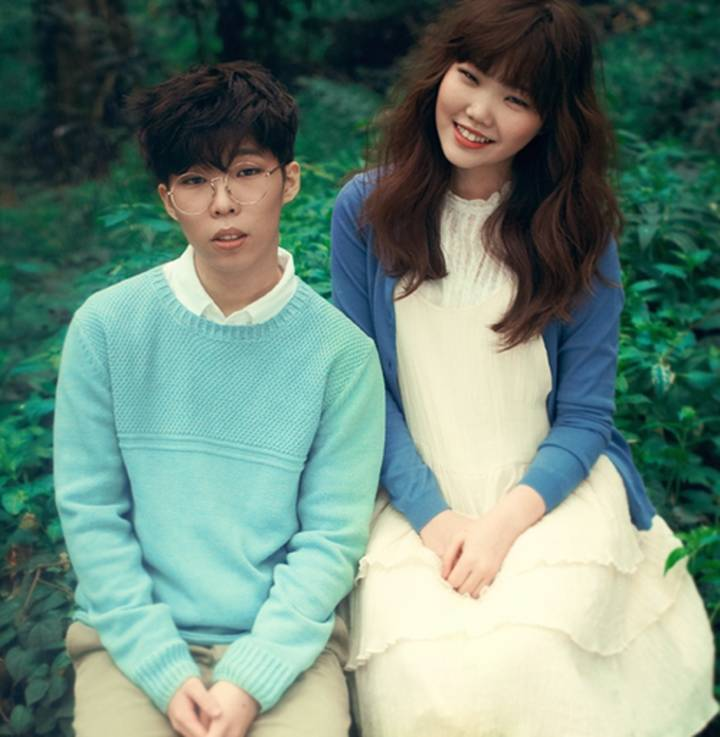

Korean Pop
NOTE AU LECTEUR: Page imbibée d'un concentré d'ironie et de second degré pouvant être difficilement assimilé par le système digestif de certaines personnes.
Il est des choses dans la vie dont on ne veut pas se souvenir, et le thème de cette page en fait partie. Alors un conseil: si vous ne connaissez pas, si vous avez tapé ou sélectionné le contenu du titre par pure curiosité après avoir entendu "k-pop" au hasard d'une rencontre peu recommandable, fuyez. Personne ne vous force à lire cela. Personne (ou presque) ne veut vous voir perdre la tête. Resistez à la sélection naturelle de plus en plus vicieuse qui s'applique à notre espèce. C'est déjà toute une génération qui est vérolée, n'assombrissons pas d'avantage notre propre futur...
Fin de la plaisanterie. Korean Pop est un terme désignant un genre musical originaire de Corée du Sud, caractérisé par une large variété d'éléments audiovisuels. Son principal public correspond aux pré-adolescents, adolescents et jeunes adultes.
La K-pop ne cesse de gagner en influence sur les marchés étrangers en dehors de l'Asie, notamment aux États-Unis, en Europe, au Canada et en Australie. En 2009, les Wonder Girls sont devenues le premier groupe coréen à être placé, aux États-Unis, sur le U.S. Billboard Hot 100 chart avec leur single, Nobody. Voici quelques illustrations:
La K-pop ne cesse de gagner en influence sur les marchés étrangers en dehors de l'Asie, notamment aux États-Unis, en Europe, au Canada et en Australie. En 2009, les Wonder Girls sont devenues le premier groupe coréen à être placé, aux États-Unis, sur le U.S. Billboard Hot 100 chart avec leur single, Nobody. Voici quelques illustrations:
Mamamoo
Girlband sud-coréen de la Rainbow Bridge World (agence coréenne de divertissement) composé de 4 membres: Solar, Moon Byul, Whee In et Hwa Sa. Le groupe pop/R&B fait ses débuts le 18 juin 2014 avec le mini-album Hello.

Akmu
Aussi appelé Akdong Musician, duo sud-coréen composé de Lee Chan Hyeok, chanteur/ rappeur/ guitariste/compositeur et de sa petite sœur Lee Su Hyeon, chanteuse. Ils sont les vainqueurs de la 2ème saison de K-Pop Star. Spécialisés dans les ballades.